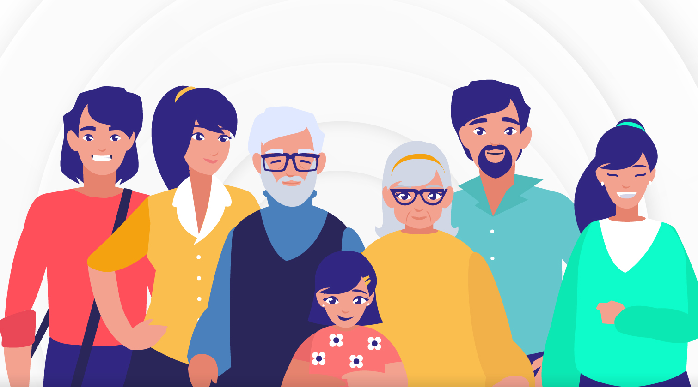

Introducción
¿Qué es la conexión social?
La conexión social es la experiencia de sentir proximidad, pertenencia y unión con otros; implica sentirse cuidado, valorado y comprendido. Es una necesidad humana fundamental que se manifiesta a través de relaciones significativas con familiares, amigos, compañeros y la comunidad.
Componentes clave
- Sentimiento de pertenencia: sentirse parte de un grupo.
- Apoyo mutuo: contar con personas en las que confiar.
- Cuidado y aceptación: ser valorado por quienes somos.
La Importancia de las Relaciones Sociales
Salud Física y Mental
Las relaciones sociales son importantes porque contribuyen a la salud mental y física, al desarrollo personal y al sentimiento de pertenencia y bienestar. Fortalecen la salud al reducir el estrés y aumentar la resiliencia, mientras que la falta de conexión social puede tener consecuencias negativas para la salud. Socializar fomenta la capacidad cognitiva y el aprendizaje de habilidades sociales esenciales para la adaptación y la vida en comunidad.
Reducción del estrés
Las relaciones de apoyo actúan como un amortiguador contra el estrés, ayudando a procesar emociones y reduciendo la tensión.
Bienestar general
La conexión con otros genera sentimientos de ser amado y valorado, lo que es vital para el bienestar emocional.
Longevidad
El aislamiento social está asociado con un mayor riesgo de muerte prematura, infartos, accidentes cerebrovasculares y otros problemas de salud.
Desarrollo Cognitivo y Personal
Estimulación mental
Mantener relaciones sociales ayuda a ejercitar el lenguaje, la memoria, la capacidad de planificación y la empatía.
Desarrollo de habilidades
A través de la interacción social, aprendemos a adaptarnos a diferentes contextos y a desarrollar conductas sociales apropiadas.
Fortalecimiento de la autoestima
Las amistades y las relaciones de apoyo son fundamentales para desarrollar la autoestima, la confianza y la seguridad en uno mismo.
Sentimiento de Pertenencia
Propósito y significado
El apoyo social puede dar a la vida un mayor sentido de propósito y significado.
Felicidad y vitalidad
Los vínculos sociales positivos influyen en nuestro bienestar, haciéndonos sentir más felices y vitales.
Conexión y comunidad
El deseo de conectar con otros es una necesidad humana innata que nos permite formar parte de una comunidad.

Beneficios Físicos
Beneficios físicos de la conexión social
La conexión social ofrece beneficios físicos significativos, como el fortalecimiento del sistema inmunológico, la mejora de la salud cardiovascular y la reducción del estrés e inflamación. También promueve hábitos saludables, aumenta la esperanza de vida y contribuye a un envejecimiento más saludable, previniendo problemas cognitivos como la demencia.
Principales beneficios
-
Fortalece el sistema inmunológico: las relaciones sólidas aumentan la resistencia a enfermedades y reducen el impacto del estrés.
-
Mejora la salud cardiovascular: la conexión social está asociada con una mejor salud del corazón, sobre todo en adultos mayores.
-
Reduce el estrés y la inflamación: el contacto social libera oxitocina y dopamina, disminuyendo el cortisol y el dolor.
-
Promueve hábitos saludables: fomenta conductas positivas como una buena alimentación y actividad física.
-
Aumenta la esperanza de vida: las personas socialmente conectadas tienden a vivir más tiempo.
-
Contribuye a un envejecimiento saludable: disminuye el riesgo de deterioro cognitivo y demencia.
-
Alivia el dolor: el contacto social, incluso físico, puede reducir el dolor percibido.
Impacto de la Conexión Social en la Salud Física
Bienestar Físico y Mental
La conexión social influye directamente en la salud física y mental. Reduce el estrés, protege contra enfermedades cardíacas y fortalece la respuesta inmune. La ausencia de vínculos sociales puede favorecer problemas de salud como inflamación crónica, ansiedad o deterioro cognitivo.
Reducción del estrés
Las relaciones de apoyo actúan como amortiguador emocional, reduciendo tensión y ansiedad.
Bienestar general
Sentirse valorado y acompañado mejora el estado emocional y la estabilidad mental.
Longevidad
El aislamiento social está relacionado con mayor riesgo de muerte prematura, infartos y otras complicaciones.
Salud Cognitiva y Envejecimiento
Protección cognitiva
Mantener contacto social estimula memoria, lenguaje, empatía y atención, reduciendo riesgo de deterioro mental.
Función cerebral activa
Interactuar con otros mantiene el cerebro activo y favorece la neuroplasticidad.
Envejecimiento saludable
Las relaciones sociales mejoran la calidad de vida en la vejez y reducen probabilidades de demencia.
Apoyo y Acompañamiento
Seguridad emocional
Las conexiones sociales proporcionan estabilidad emocional y un sentido profundo de compañía.
Motivación y energía
Las interacciones positivas aumentan la vitalidad y motivación diaria.
Comunidad y unión
Formar parte de un grupo satisface la necesidad innata de pertenencia y conexión humana.
Conexión Social y Prevención de la Depresión
La conexión social previene la depresión al ofrecer una red de apoyo que ayuda a afrontar el estrés, reduce los sentimientos de soledad y mejora la salud mental en general. Esto se logra participando en actividades sociales, manteniendo relaciones de confianza y brindando apoyo a otros. Sin embargo, es importante ser consciente de los efectos negativos de las redes sociales, como la comparación constante, y priorizar las interacciones en persona y el bienestar propio.
Estrategias para usar la conexión social en la prevención
-
Cultivar relaciones significativas: mantener vínculos estables y de apoyo con familia y amigos es esencial para manejar situaciones estresantes.
-
Buscar apoyo activo: si te sientes mal, hablar con alguien de confianza puede aliviar la carga emocional y reducir el estrés.
-
Participar en actividades sociales: involucrarse en actividades comunitarias o de voluntariado fomenta un sentido de pertenencia y propósito.
-
Ser consciente del uso de redes sociales:
- Limitar el tiempo: establece límites y desactiva notificaciones para evitar la dependencia.
- Evitar comparaciones: recuerda que las redes sociales muestran versiones idealizadas de la vida.
- Priorizar el mundo real: es más saludable fortalecer interacciones en persona, incluso cuando requiere esfuerzo.
-
Ayudar a otros: realizar actos de bondad o altruismo genera emociones positivas y mejora el bienestar propio.
La Conexión Social en la Era Digital
La conexión social en la era digital permite a las personas interactuar y mantener vínculos mediante plataformas en línea, facilitando la cercanía incluso a la distancia. Sin embargo, también surge el desafío de equilibrar las interacciones virtuales con las presenciales para evitar el aislamiento y la superficialidad. Herramientas como las videollamadas y redes sociales se han vuelto esenciales, especialmente tras la pandemia, que incrementó la dependencia de la tecnología. Fomentar una conexión significativa requiere esfuerzos conscientes para equilibrar el mundo digital y físico mediante estrategias como llamadas virtuales o juegos en línea.
Beneficios de la conexión social en la era digital
-
Superación de la distancia: la tecnología permite conectar con familiares y amigos en cualquier lugar del mundo, disminuyendo la sensación de aislamiento.
-
Colaboración y comunidad: plataformas digitales facilitan el intercambio de ideas, la interacción cultural y la colaboración en proyectos personales o profesionales.
-
Acceso a nuevas comunidades: es posible unirse a grupos y comunidades en línea con intereses compartidos, lo cual enriquece la vida social; aunque es importante complementarlo con interacciones físicas.
Desafíos y retos
-
Riesgo de aislamiento y superficialidad: la dependencia excesiva de interacciones digitales puede generar soledad, ansiedad y conexiones menos profundas.
-
Diferencia entre conexión virtual y presencial: la comunicación digital carece de lenguaje corporal y matices emocionales, elementos claves en relaciones auténticas.
-
Impacto en la salud mental: existe un debate sobre cómo la constante exposición digital afecta el bienestar y la calidad de las relaciones sociales.
Estrategias para fomentar la conexión social
-
Establecer un equilibrio: buscar armonía entre actividades en línea y experiencias presenciales para mantener una vida social saludable.
-
Ser intencional con la comunicación: mantener contacto regular con amigos y familiares, incluso con llamadas o chats breves.
-
Participar en actividades grupales: unirse a talleres, cursos o grupos en línea que fomenten la convivencia y el aprendizaje.
-
Crear momentos de conexión: organizar “cafés virtuales” o juegos en línea para fortalecer vínculos de forma cercana y divertida.
-
Invertir en la comunicación cara a cara: priorizar encuentros presenciales siempre que sea posible, ya que son esenciales para el bienestar emocional.
Cómo Fomentar la Conexión Social
Para fortalecer la conexión social, es importante dedicar tiempo de calidad a las personas, practicar la escucha activa, comunicarse con empatía y participar en actividades grupales que resulten interesantes. También es útil utilizar la tecnología para mantener el contacto, unirse a una comunidad o causa significativa, e incluso considerar adoptar una mascota para obtener compañía y apoyo emocional.
Comunícate activamente
-
Practica la escucha: permite que la otra persona termine de hablar antes de responder e interrumpe lo menos posible.
-
Haz preguntas abiertas: formula preguntas que inviten a respuestas elaboradas y mantengan la conversación fluida.
-
Sé empático: intenta comprender la perspectiva de los demás, deja de lado los prejuicios y muestra respeto en cada interacción.
Participa en actividades
-
Únete a grupos: participa en clubes, clases o eventos que te interesen para conocer personas con gustos similares.
-
Haz voluntariado: colaborar en causas comunitarias fomenta el sentido de propósito y conexión.
-
Organiza reuniones: planifica comidas, picnics o encuentros simples para fortalecer vínculos sociales.
Utiliza la tecnología y otros recursos
-
Mantente en contacto digitalmente: usa videollamadas, mensajes o redes sociales para conectar con familiares y amigos.
-
Considera una mascota: adoptar un animal puede aportar compañía, consuelo y reducir el estrés.
-
Conéctate con tu comunidad: aprovecha los recursos de bibliotecas, centros comunitarios o espacios para adultos mayores para encontrar actividades.
Fomenta la conexión en tu entorno
-
Fortalece los lazos existentes: dedica tiempo de calidad a las personas importantes y procura mantener la comunicación constante.
-
Conoce a tus vecinos: un entorno amigable facilita interacciones naturales y relaciones cercanas.
-
Crea un sentido de pertenencia: en el trabajo, presencial o remoto, participa en actividades que fortalezcan la cohesión del equipo.
Ejemplos de la conexión social
Conexidad Social
La "conexidad social" se refiere al vínculo, unión o relación estrecha entre diferentes elementos, situaciones o personas dentro del ámbito social o legal,
que justifica un tratamiento conjunto o relacionado.
Ámbito Social General
Relaciones familiares
Los lazos entre padres, hijos, hermanos y otros parientes generan una conexidad social fundamental, influyendo en el apoyo mutuo, la herencia y la
responsabilidad legal y moral.
Comunidad y pertenencia
Sentirse parte de un grupo, como un vecindario, un club deportivo o una comunidad religiosa, crea una conexidad social que fomenta
la solidaridad y la empatía entre sus miembros.
Relaciones laborales
El vínculo entre compañeros de trabajo o entre empleados y empleadores, que puede dar lugar a acciones conjuntas como negociaciones colectivas
o proyectos colaborativos.
Redes sociales (digitales y físicas)
La conexión a través de plataformas en línea o grupos de amigos en la vida real permite la difusión de información, el apoyo emocional y
la coordinación de actividades.
Si quieres entrenar tus habilidades sociales, presiona la imagen para ver un video de YouTube y saber más del tema:
Conclusión
La conexión social es un componente esencial de un estilo de vida saludable. No solo mejora nuestra salud física y mental, sino que también contribuye a nuestra felicidad y longevidad.
Fomentar relaciones saludables, participar en actividades comunitarias y usar la tecnología de manera responsable son formas eficaces de mantener y fortalecer los lazos sociales.
Importancia de la Conexión Social
La conexión social es fundamental para la salud y el bienestar, ya que los vínculos fuertes con otros se asocian con vidas más largas y saludables,
mejor salud mental y física, y una mayor resiliencia comunitaria. Su conclusión es que, si bien la conexión es una necesidad humana básica,
las redes sociales y las comunidades con lazos fuertes juegan un papel crucial en el desarrollo y mantenimiento de conexiones saludables
para las personas. Invertir en conexión social es esencial para el bienestar individual y colectivo, ya que la desconexión puede llevar
a problemas de salud graves y a la falta de un sentido de comunidad.
Conexión Social y Bienestar
Salud física y mental
Las conexiones sociales fuertes están relacionadas con una mayor esperanza de vida y una menor incidencia de enfermedades como cardiopatías,
accidentes cerebrovasculares, ansiedad, depresión y demencia.
Resiliencia y prosperidad
Una sociedad con fuertes vínculos sociales es más resiliente ante las crisis y la prosperidad económica es mayor.
Sentido de pertenencia
La conexión social proporciona un sentido de propósito, pertenencia y apoyo, lo que mejora la felicidad y el bienestar general.
Desconexión Social
Consecuencias negativas
La desconexión social, que puede manifestarse como soledad (sentimiento subjetivo) o aislamiento social (falta de contacto), se asocia
con un mayor riesgo de problemas de salud física y mental.
Impacto de la soledad
La soledad crónica puede generar dolor emocional y respuestas de estrés que conducen a inflamación crónica e inmunidad reducida,
aumentando el riesgo de enfermedades crónicas.
Recomendaciones
Priorizar las relaciones
Se recomienda invertir tiempo y esfuerzo en construir y mantener relaciones sólidas con familiares, amigos y la comunidad en general.
Usar redes sociales de forma responsable
Es vital fomentar un uso consciente y responsable de las redes sociales, estableciendo límites de tiempo y configurando la privacidad
para proteger la huella digital.
Promover la conexión
Se debe promover la conexión social como un pilar del bienestar global, reconociendo su importancia para la salud pública y la cohesión social.